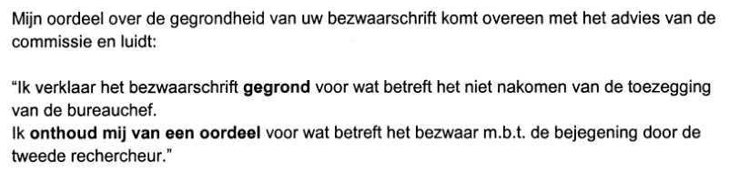
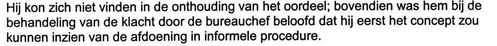

Exhibit · Letter
W.J. Deetman, Haaglanden police authority, to Giltay, 14 December 2000
The first passage is the ruling in the letter. The second comes from the advice of the complaints committee enclosed with the letter, and says what the promise entailed and why it was not kept.
The ruling
“My judgement on whether your notice of objection is well founded accords with the advice of the committee, and it reads: ‘I declare the notice of objection well founded as regards the failure to keep the promise made by the station chief. I withhold judgement as regards the objection concerning the treatment by the second detective.’” Page 1, the ruling, in the two paragraphs that follow the mention of the Independent Committee for Police Complaints. Line breaks in the scan have been removed. The letter itself puts the inner quotation in double quotation marks and prints “gegrond” and “onthoud mij van een oordeel” in bold; that emphasis is not reproduced here. Translated from the Dutch; the original wording is below.
“Mijn oordeel over de gegrondheid van uw bezwaarschrift komt overeen met het advies van de commissie en luidt: ‘Ik verklaar het bezwaarschrift gegrond voor wat betreft het niet nakomen van de toezegging van de bureauchef. Ik onthoud mij van een oordeel voor wat betreft het bezwaar m.b.t. de bejegening door de tweede rechercheur.’” Original wording

The promise
“[…] moreover, during the handling of the complaint he had been promised by the station chief that he would first be able to see the draft of the settlement in the informal procedure. […] The committee notes, however, that the station chief has argued that he refrained from sending the draft letter because the complainant’s confidential adviser would not be available for the time being, and that a speedy settlement of the complaint was thereby put at risk. The committee finds that the station chief did not put this consideration to the complainant – with whom, after all, he had made an agreement. The committee is of the opinion that he thereby departed unilaterally from the agreement and wrongly failed to keep it.” Pages 4 and 6 of the PDF, from the advice of the complaints committee of 13 December 2000 that is enclosed with the letter (pages 3 and 5 of the advice itself). The first sentence is under ‘Klacht in eerste aanleg’ (the complaint at first instance) and sets out the complainant’s position; the three that follow are the committee’s considerations under ‘Voor wat betreft het niet nakomen van de toezegging m.b.t. de conceptbrief’ (as regards the failure to keep the promise concerning the draft letter). The ellipses […] stand for the opening of the first sentence and for the intervening text of the advice. ‘Klager’, the complainant, is Giltay. Line breaks in the scan have been removed. Translated from the Dutch; the original wording is below.
“[…] bovendien was hem bij de behandeling van de klacht door de bureauchef beloofd dat hij eerst het concept zou kunnen inzien van de afdoening in informele procedure. […] De commissie stelt echter vast dat de bureauchef heeft aangevoerd dat hij heeft afgezien van het toezenden van de concept-brief omdat de vertrouwenspersoon van klager voorlopig niet beschikbaar zou zijn en dat daarmee spoedige afdoening van de klacht in gevaar kwam. De commissie constateert dat de bureauchef deze overweging niet aan klager – met wie hij immers een afspraak had gemaakt – heeft voorgelegd. De commissie is van mening dat hij daarmee eenzijdig van de afspraak is afgeweken en deze ten onrechte niet is nagekomen.” Original wording

Why this document matters
In July 1999 the police refused to record the criminal complaint of slander and libel that Giltay wanted to file against Barbara Overduyn, and he objected to how his grievance about the police’s conduct was then dealt with. After Queen Beatrix referred his letter of 14 October 2000 to the Minister of the Interior, Giltay’s notice of objection of 22 July 2000 was answered by The Hague’s mayor Wim Deetman.
Deetman signs here as the authority responsible for the Haaglanden police force. He declares the objection well founded as regards a promise the station chief did not keep, and withholds judgement on how the second detective treated Giltay. He also states that he has asked for his ruling to be brought to the attention of the officers involved, so that lessons are drawn from it.
Provenance
- Document
- Letter, one page, on the letterhead of Politie Haaglanden, from the office of the korpsbeheerder, enclosing the advice of the Independent Committee for Police Complaints of the Haaglanden region of 13 December 2000, six pages
- From
- The korpsbeheerder (police authority) of the Haaglanden police region, Bureau of Integrity and Security, The Hague; signed by drs. W.J. Deetman
- To
- E.F. Giltay, The Hague
- Date
- 14 December 2000
- Subject
- “bezwaar tegen klachtafdoening”, objection to the handling of a complaint
- References
- Your reference: 22-7-2000, the letter of 22 July 2000
- Enclosures
- “div.”, various
- Redactions
- The police authority’s signature beneath the letter and those of the chair and the secretary beneath the advice are blacked out in the scan
- Language
- Dutch
- Held by
- Edwin Giltay, the addressee
- See also
- Police district chief to Giltay, 26 March 2000Queen’s Office to Giltay, 31 October 2000
Cited in: the essay ‘The Ban Fell, the Book Stood’ in the chapter (3) ‘What the Book Reveals: Srebrenica Cover-up’.
Exhibit page: https://
Document: https://
Last modified 12 October 2026, accessed 23 October 2026.

This page is an exhibit to the book The Cover-up General by Edwin Giltay and its accompanying website.